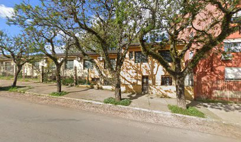

Entre os principais pacientes atendidos estão:
- Pessoas com problemas neutológicos com problemas de equilibrio e movimento;
- Crianças com paralisia cerebral;
- Pacientes com traumatismos requimedulares/cranianos;
- Pacientes amputados (cuja maioria acaba sendo em razão da diabetes).
Objetivos do SRF:
- Fornecer reabilitação clínica funcional, contribuindo para a melhoria das condições de vida e integração social.
- Promover a autonomia e independência para pessoas com deficiência, temporariamente ou permanentemente, por meio da reabilitação física
- Fornecer órteses, próteses e meios de locomoção, como cadeiras de rodas, conforme mencionado na aba de serviços.
Áreas
Todas as informações necessárias sobre serviços, formas de contato e equipe.

Como Agendar uma Consulta
Veja como marcar uma consulta e quais documentos necessários.
Ver instruções

Formas de contato
O serviço de Reabitação Física recebe ligações, e-mails, além de atender presencialmente em seu endereço. Tire suas dúvidas aqui.
Formas de Contato